📖 L25: Lab 12 – Creating External Content for a ViewApp
Module 5 — External Content | Lab Exercise
Pages 357–376
Introduction
In this lab, you will create a new sub-toolset under the Training toolset on the Graphics tab for organizing external content items. You will then build two external content items: one with a static link to an image file (a simulated plant layout), and one with a dynamic link to an Excel spreadsheet that updates based on the selected mixer asset name at runtime.
Lab Objectives:
Create external content items on the Graphics tab
Configure a static link to an image file
Configure a dynamic link using an expression with Me.Tagname
Link external content to automation objects for auto-fill navigation
Part 1: Create a Static External Content Item
Create the Sub-Toolset
Steps 1–3:
On the Graphics tab, right-click the Training toolset and select New → Graphic Toolset.
Rename the new toolset to External Content.
Right-click Training \ External Content and select New → External Content.
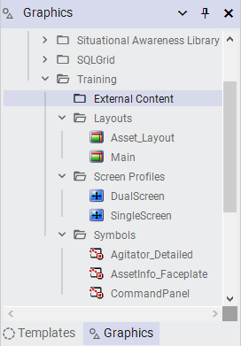
Step 1: Right-click the Training toolset and select New → Graphic Toolset to create a sub-toolset
Step 3: Right-click the External Content toolset and select New → External Content
Configure the PlantLayout Item
Steps 4–5:
Rename the new external content item to PlantLayout.
Double-click PlantLayout to open it in the External Content Editor.
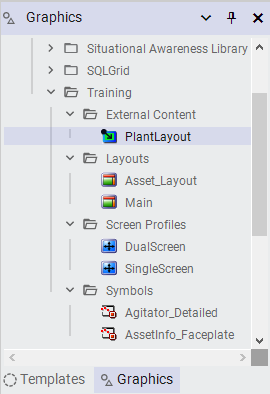
Step 4: The PlantLayout item appears with its identifying icon in the External Content toolset
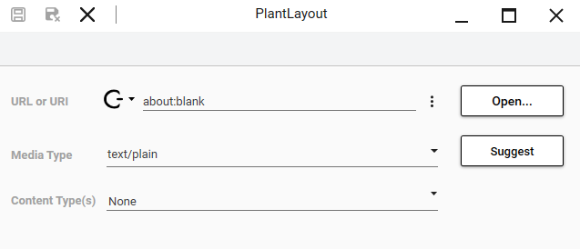
Step 5: The External Content Editor opens with default values — URL/URI shows about:blank and Media Type shows text/plain
Steps 6–10:
Click the ellipsis to the right of the URL or URI field, then select Browse for file.
Navigate to C:\Training\Other Files, select Plant_Layout.PNG, and click Open.
Click Suggest — the Media Type changes from text/plain to image/png.
For Content Type(s), select Docs from the dropdown.
Click Save and Close, then check in the PlantLayout external content item.
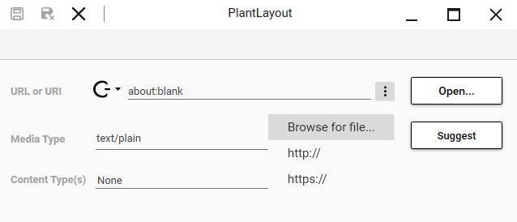
Step 6: Click the ellipsis and select Browse for file to open the file selection dialog
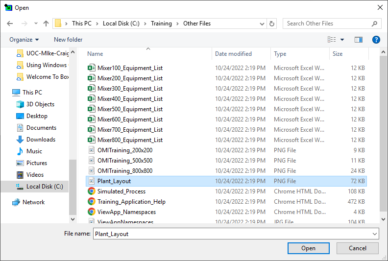
Step 7: Navigate to C:\Training\Other Files and select Plant_Layout.PNG
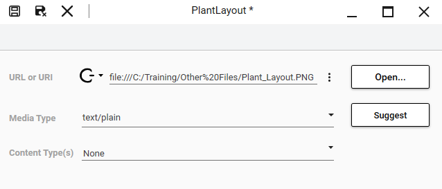
Step 7 (after): The URL/URI field now shows the file path to Plant_Layout.PNG
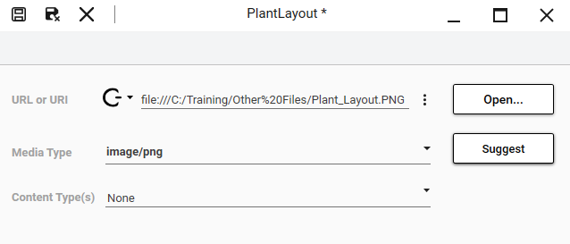
Step 8: After clicking Suggest, the Media Type automatically changes to image/png based on the file extension
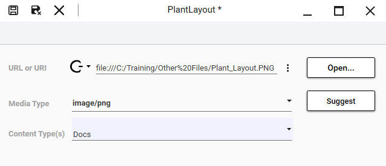
Step 9: Set Content Type(s) to Docs to match the layout pane configuration
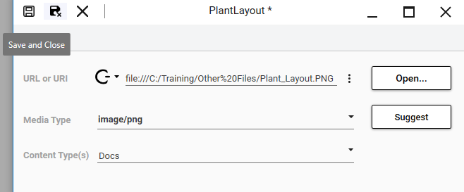
Step 10: Click Save and Close, then check in the PlantLayout external content item
Part 2: Link Static External Content to a Navigation Item
Steps 11–15:
Switch to the ViewApp Editor.
In the Navigation pane, select Plant.
On the Toolbox tab, search for PlantLayout.
Drag PlantLayout to Pane1.
Click Update to save changes and update the preview session.
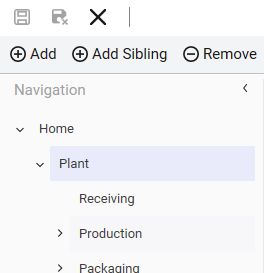
Steps 12–13: Select Plant in the Navigation pane and search for PlantLayout on the Toolbox tab
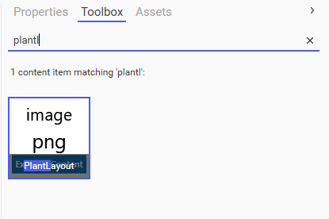
Step 13: The PlantLayout content item appears in the Toolbox search results
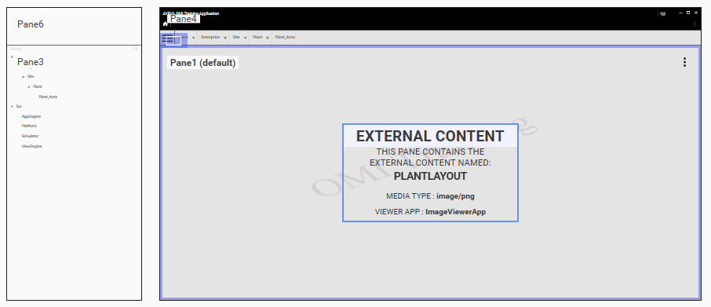
Step 14: Drag PlantLayout to Pane1 — the preview area updates to show the external content with media type image/png
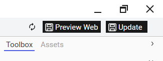
Step 15: Click Update to save changes and launch the preview session
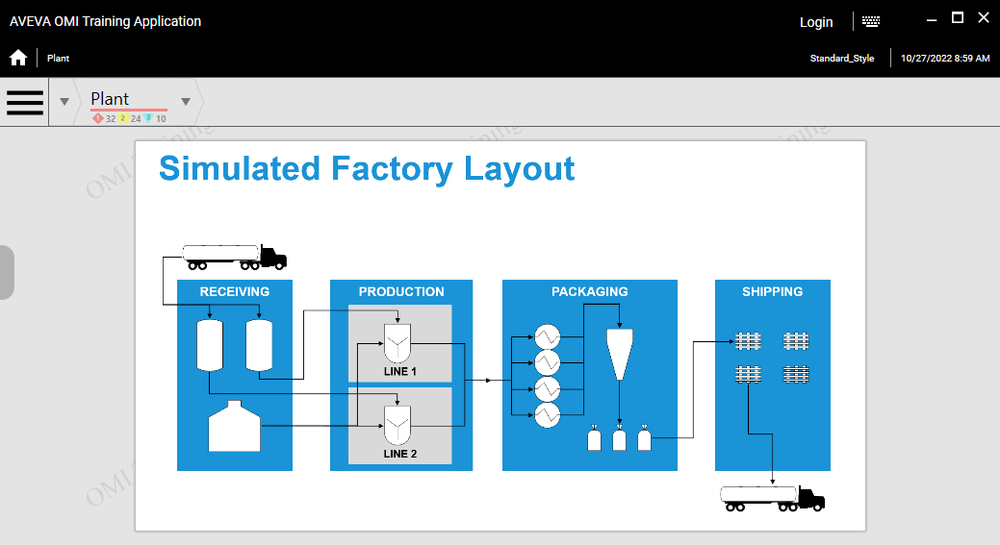
The Plant navigation item now displays the PlantLayout image showing Receiving, Production, Packaging, and Shipping areas
Tip: Hover your mouse over the pane to reveal flip, rotate, and zoom tools at the bottom. You can also press CTRL and use the mouse wheel to zoom in and out.
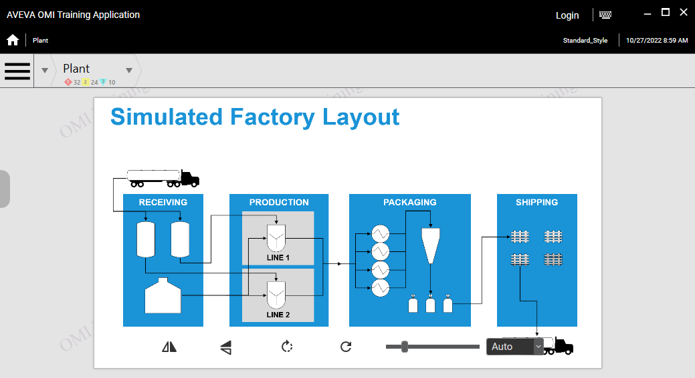
Steps 16–17: The ImageViewerApp provides flip, rotate, and zoom tools at the bottom of the pane
Part 3: Create a Dynamic External Content Item
Create MixerEquipmentList
Steps 19–25:
On the Graphics tab, right-click Training \ External Content and select New → External Content.
Rename the new item to MixerEquipmentList.
Double-click MixerEquipmentList to open it in the External Content Editor.
Click the ellipsis and select Browse for file.
Navigate to C:\Training\Other Files, select Mixer100_Equipment_List.xlsx, and click Open.
Expand the editor to see all text in the URL or URI field.
Select all text in the URL or URI field, right-click, and select Copy.
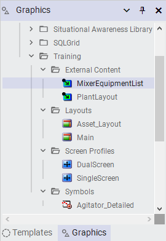
Steps 19–20: The new MixerEquipmentList item appears in the External Content toolset
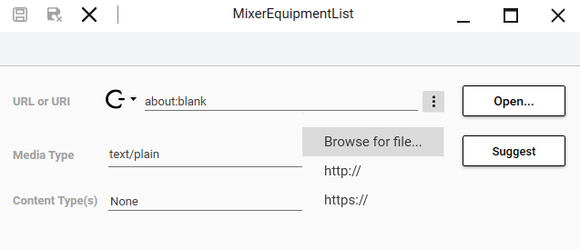
Steps 21–22: Open the editor and click Browse for file to select the Excel spreadsheet
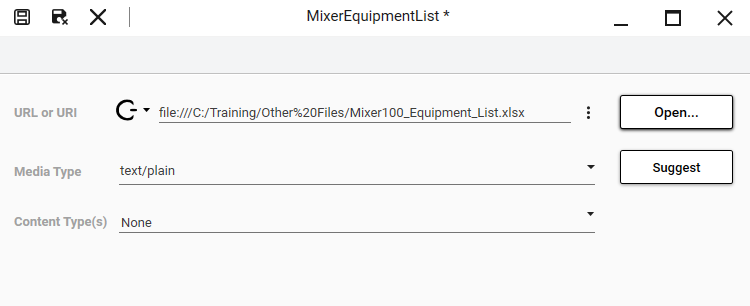
Step 23: The URL/URI field shows the full path to the Excel file
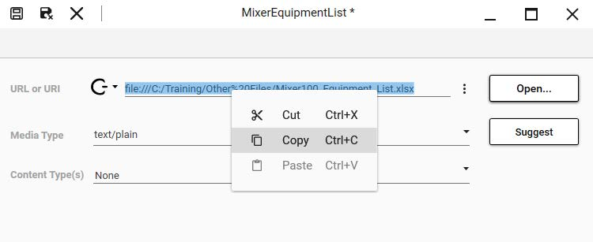
Step 25: Copy the URL text to the clipboard — you will modify it into a dynamic expression in the next steps
Configure the Dynamic Expression
Steps 26–29:
Click Suggest — the Media Type changes to the spreadsheet MIME type.
Click the down-arrow on the Constant Mode icon and select Reference Or Expression.
In the URL or URI field, right-click and select Paste. An error will appear because the raw file path is not a valid expression.
Modify the expression as follows: "file:///C:/Training/Other%20Files/" + Me.Tagname + "_Equipment_List.xlsx"
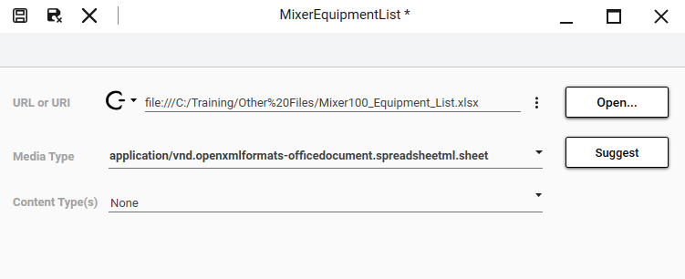
Step 26: After clicking Suggest, the Media Type is auto-detected as the Excel spreadsheet MIME type
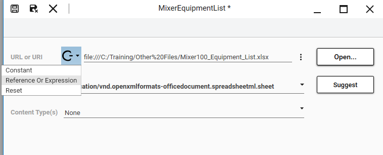
Step 27: Switch from Constant mode to Reference Or Expression mode to enable dynamic expressions
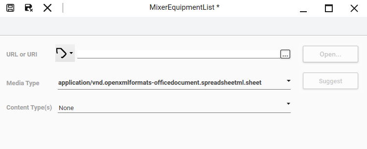
Step 28: After switching modes, the icon changes to indicate dynamic expression mode
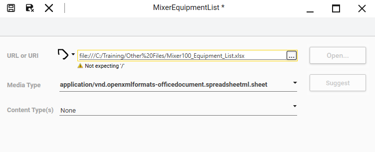
Step 28 (error): Pasting the raw file path generates an error — it is not formatted as a valid expression
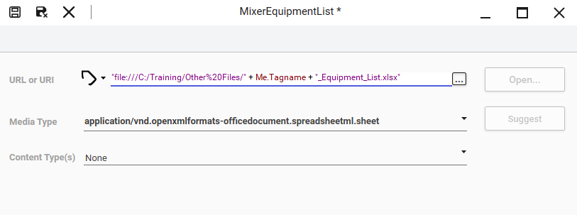
Step 29: The corrected expression concatenates the file path with Me.Tagname to create a dynamic URL per mixer
Dynamic Expression: The expression "file:///C:/Training/Other%20Files/" + Me.Tagname + "_Equipment_List.xlsx" uses Me.Tagname to dynamically resolve the file path based on which mixer object is currently displayed. When navigating to Mixer100, it resolves to Mixer100_Equipment_List.xlsx; for Mixer200, it resolves to Mixer200_Equipment_List.xlsx.
Finalize and Link to Automation Object
Steps 30–36:
Set Content Type(s) to Docs.
Save and close MixerEquipmentList, and check it in.
On the Templates tab, in the Training \ Project toolset, double-click $Mixer to open it in the Object Editor.
On the Attributes tab, in the Content pane, click Link Content.
In the Galaxy Browser, navigate to Training \ External Content, select MixerEquipmentList, and click OK.
With MixerEquipmentList selected, change the name to EquipmentList.
Save and close the $Mixer template, and check it in.
Step 30: Set Content Type(s) to Docs to match the layout pane configuration
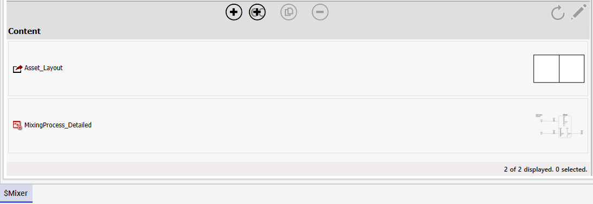
Step 33: Click Link Content in the Content pane to open the Galaxy Browser
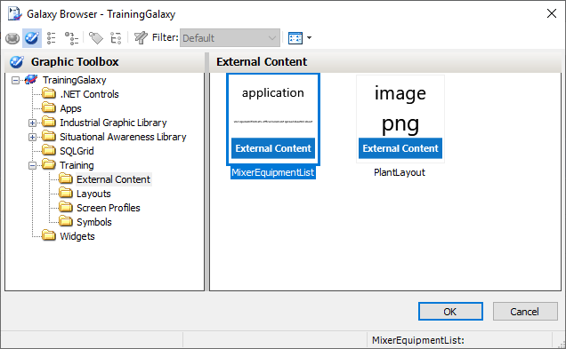
Step 34: Select MixerEquipmentList from Training \ External Content in the Galaxy Browser
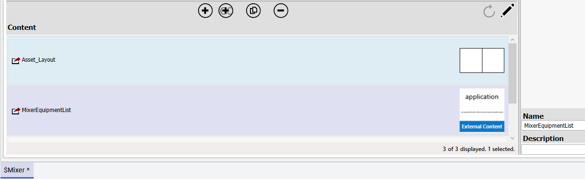
After linking: MixerEquipmentList appears in the Content pane alongside existing content items
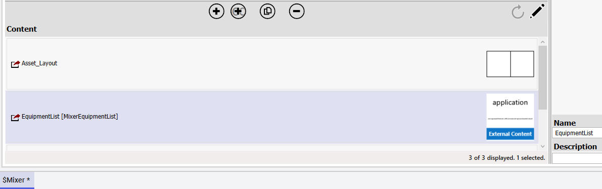
Step 35: Rename MixerEquipmentList to EquipmentList for cleaner display at runtime
Part 4: Update Asset_Layout for Auto-Fill
Steps 37–43:
On the Graphics tab, double-click Asset_Layout to open it in the Layout Editor.
In the layout preview, select Pane2.
Click the Add new pane down-arrow to add a new Pane3 below Pane2.
Select Pane3 and set General → Content Type(s) to Docs.
Select the divider between Pane2 and Pane3 (do not move it).
On the Properties tab, check the General → Is Interactive property on the divider.
Save and close Asset_Layout, and check it in.
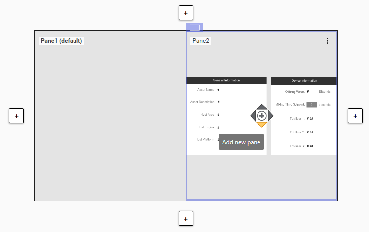
Step 39: Click the down-arrow on Pane2's add pane control to create a new Pane3 below it
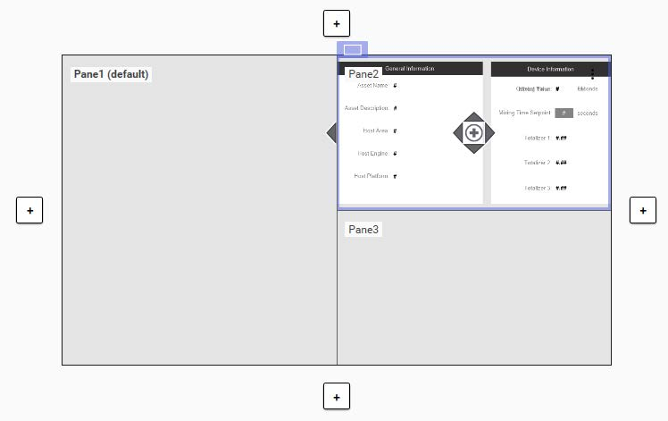
After adding Pane3: The layout now has three panes — Pane1 (left), Pane2 (top-right), Pane3 (bottom-right)
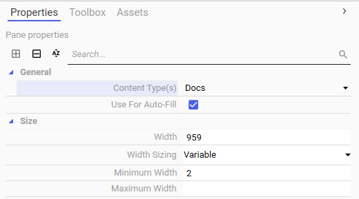
Step 40: Set Pane3's Content Type(s) to Docs and ensure Use For Auto-Fill is checked
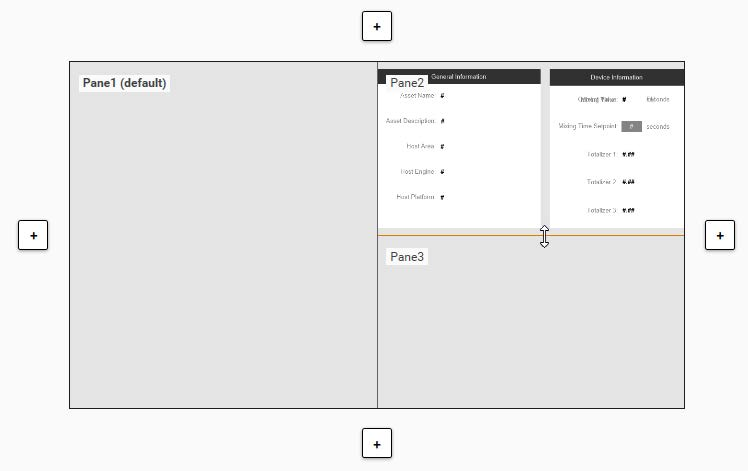
Step 41: Select the divider between Pane2 and Pane3 to configure its properties
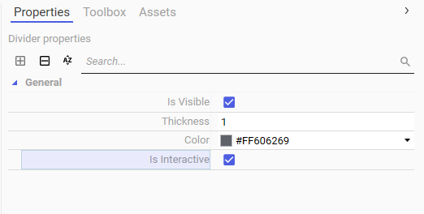
Step 42: Enable Is Interactive on the divider so users can resize the panes at runtime
Part 5: Test the ViewApp
Steps 44–49:
Switch to the ViewApp preview session.
Navigate to Mixer100.
Use the zoom tools to adjust the spreadsheet view (try 70%).
Move the divider between Pane2 and Pane3 to resize the panes.
Navigate to Mixer200 — notice the equipment list updates dynamically.
When finished testing, minimize the preview session.
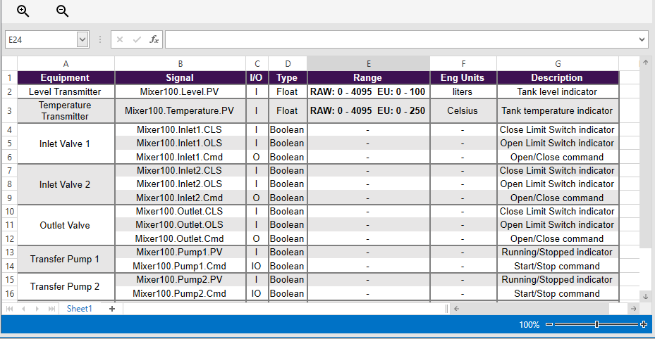
Step 45: Navigating to Mixer100 displays the equipment spreadsheet in the bottom-right pane with zoom and scroll controls
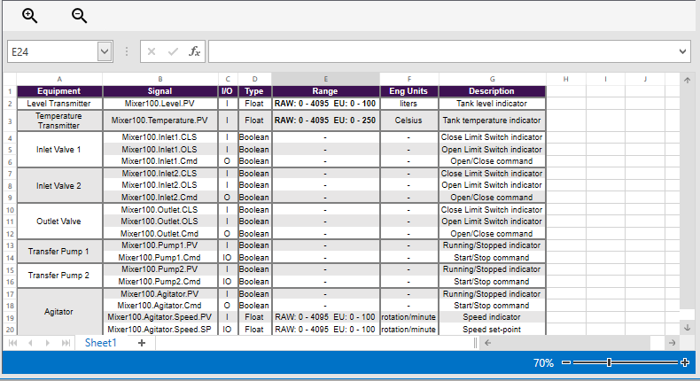
Step 46: Zoom to 70% to see more of the equipment data — the spreadsheet includes signal names, I/O types, ranges, and descriptions
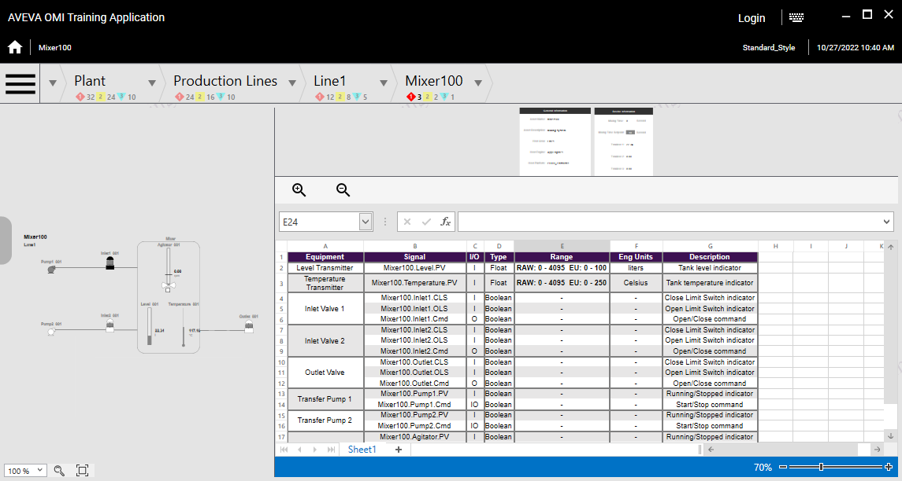
Step 47: Drag the divider to resize the spreadsheet pane — the layout adjusts dynamically at runtime
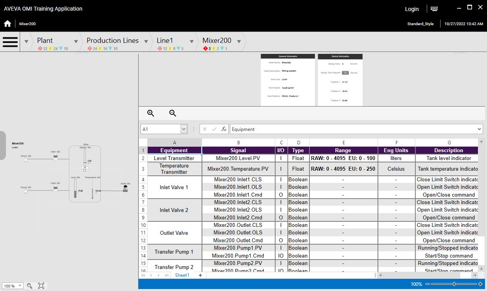
Step 48: Navigate to Mixer200 — the dynamic expression resolves to Mixer200_Equipment_List.xlsx, displaying the correct equipment data
What you accomplished: You created two external content items — one static (PlantLayout image) and one dynamic (MixerEquipmentList spreadsheet). The static item is linked directly to a navigation item, while the dynamic item uses Me.Tagname to resolve the correct spreadsheet file based on which mixer is selected at runtime.
Knowledge Check
Quiz
Q1: What is the difference between a static and a dynamic external content item?
A static external content item points to a fixed file path (e.g., an image), while a dynamic item uses an expression with variables like Me.Tagname to resolve different files at runtime based on the selected object.
Q2: What does the Suggest button do in the External Content Editor?
The Suggest button auto-detects the Media Type based on the file extension of the selected media. For example, selecting a .PNG file changes the Media Type from text/plain to image/png.
Q3: Why must you switch from Constant to Reference Or Expression mode before using Me.Tagname?
Constant mode only accepts static file paths or URLs. To use dynamic expressions with variables like Me.Tagname, you must switch to Reference Or Expression mode, which allows building expressions that resolve at runtime.
Q4: How do you link an external content item to an automation object?
Open the object in the Object Editor, go to the Content pane on the Attributes tab, and click Link Content. Then select the external content item from the Galaxy Browser.
Q5: What Content Type must be set on a layout pane to display external content?
The layout pane's Content Type(s) must match the Content Type(s) set on the external content item. In this lab, both were set to Docs.